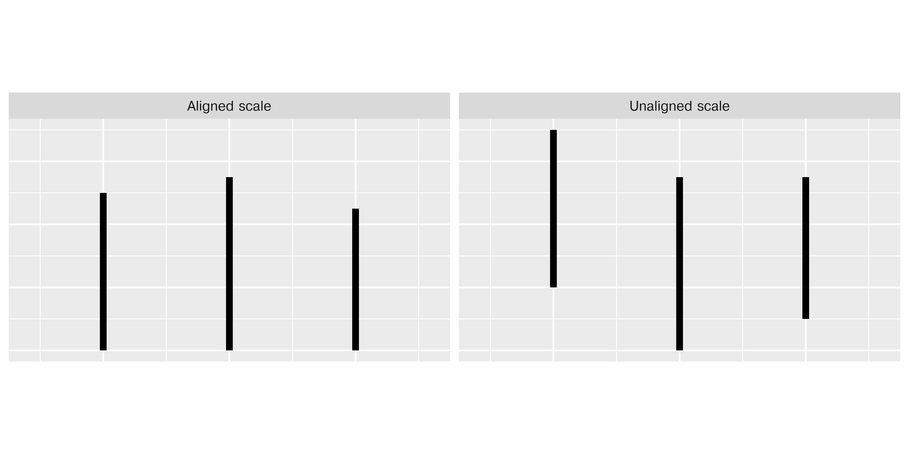
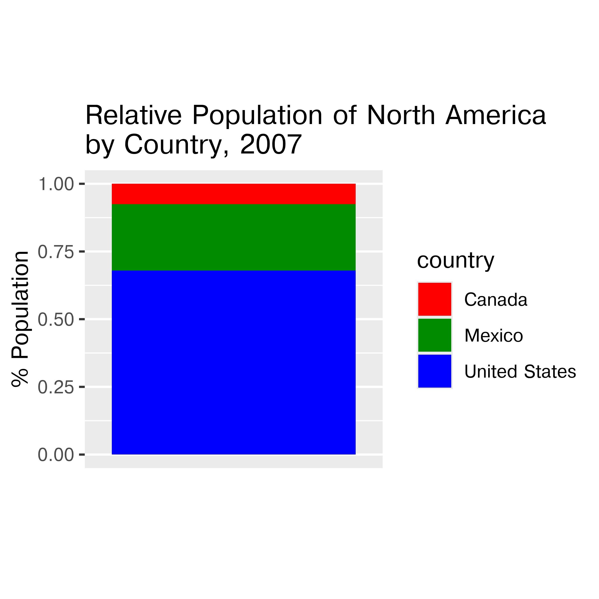
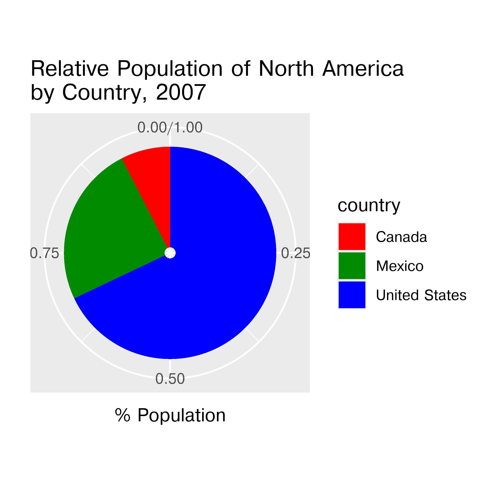

{kind=link}


A chart is good if it allows the user to draw useful conclusions that are supported by data. Obviously, this definition depends on the purpose of the chart. A simple and disposable chart created during an exploratory data analysis process may be useful even if it is not nicely formatted and publication ready, because its purpose is to guide an interactive process. This is very different than a chart created for communicating with the public – for instance, a forecast map showing possible paths and intensities of a hurricane that would inform resident decisions about storm preparation and/or evacuation.
Comprehensive advice on creating good charts is difficult, too, because what works for one dataset may not work for another, even if the variable types are similar. We have some established conventions that should usually be followed (for instance, time usually is placed on the x-axis, with a dependent variable on the y-axis), but there are usually situations where it is reasonable to break those conventions.
Finally, what makes a chart “good” requires some additional knowledge beyond statistics and programming. To make good charts, we have to understand how those charts will be interpreted, which means we need at least some basic information about human perception and cognition. The human visual system is incredibly powerful - it has a bandwidth that would make even modern computers jealous, and many computations are performed instantaneously and without requiring any process management (e.g. the calculations happen so fast and so automatically that you aren’t really aware that they’re happening). This comes with some tradeoffs, though - evolutionary optimizations that ensure that you can spot predators quickly weren’t as concerned with your ability to accurately determine the height of a two-dimensional drawing of a three-dimensional object. So, while the visual system has some amazing strengths and is a very useful medium to communicate about data, it is important to understand the limitations of the visual system’s sensors, software, short-term and long term memory, and attention.
We’ll start with a short exploration of some foundational concepts related to perception in Section 21.2. Section 21.3 will discuss the design process and how to leverage the grammar of graphics to provide both the full data and visual summaries that highlight key features. Where available, this section incorporates conclusions from empirical studies of charts and graphs to guide design decisions.
?sec-annotation expands on this discussion, demonstrating effective use of annotations to provide contextual information that can assist viewers with the interpretation of the data. Finally, Section 21.4 provides a guide to evaluating graphics for clarity, effectiveness, accessibility, and common design pitfalls.
Before we discuss how to create good charts, there is a certain amount of background information that must be considered. Charts make use of the visual system within the human brain, which means we need to understand some basic attributes of human perception and cognition in order to make the best use of this “wetware” [1] processing power.
First, let’s set the stage. Information in the form of light bounces off objects in the world and lands on our retina (there are lenses and focusing mechanisms that we’ll skip). There are four types of light detectors in the retina: three types of cones that respond to red, green, and blue light wavelengths, and rods, which respond to light intensity across wavelengths. Cones are concentrated in one area, while rods are spread across the surface of the retina. The rods and cones turn light into neural impulses, which are transmitted along the optic nerve to the visual cortex located in the back of the brain (roughly where your head would hit the floor when you are lying down). The visual cortex contains special neurons called feature detectors which organize the information from the retina and reconstruct this information into a mental representation of the world. Some feature detectors respond to specific angles, signals from specific parts of the retina corresponding to specific parts of the outside world, and many other low-level features. Signals from these feature detectors are then aggregated into higher-level concepts that form our visual experience of the world.
The initial light signals and lower-level information are sometimes called “sensation”, and the ability to detect higher-level concepts is called “perception”. We can also think of “top-down” perception, where our experience shapes what we perceive and how we experience the world, compared to “bottom-up” perception, where we construct higher-level concepts solely from lower-level signals.
Perception tends to require a few other mental resources beyond the visual detection and processing equipment (eyes, visual cortex, etc.): attention and memory (short and long-term) are vital for processing the visual input and making sense out of it. The next few subsections provide specific examples of why it’s important to understand the basics of the visual system when thinking about how to construct charts and graphs.
Our eyes are optimized for perceiving the yellow/green region of the color spectrum, as shown in Figure 21.1. Why? Well, our sun produces yellow light, and plants tend to be green. It’s pretty important to be able to distinguish different shades of green (evolutionarily speaking) because it impacts your ability to feed yourself. There aren’t that many purple or blue predators, so there is less selection pressure to improve perception of that part of the visual spectrum.

Not everyone perceives color in the same way. Some individuals are colorblind or color deficient [2]. We have 3 cones used for color detection, as well as cells called rods, which detect light intensity (brightness/darkness). In about 5% of the population (10% of XY individuals, 0.2% of XX individuals), one or more of the cones may be missing or malformed, leading to color blindness - a reduced ability to perceive different shades. The rods, however, function normally in almost all of the population, which means that light/dark contrasts are extremely safe, while contrasts based on the hue of the color are problematic in some instances.
Simulations of the same rainbow color scheme map under different types of colorblindness, generated using CoBliS. While colorblindness simulations can be useful, as colorblindness is a result of one of many different mutations, simulators do not cover all of the different color vision mutations which exist.
![The image is a detailed map of the contiguous United States highlighting the estimated fraction of precipitation lost to evapotranspiration from 1971 to 2000. The map is divided into multicolored geographic blocks representing different evapotranspiration ratios. Colors range from purple, signifying a ratio of 0.0 to 0.09, to red, representing a ratio of 1.2 to 1.29. The western part of the country predominantly features warmer colors like yellow and orange, indicating higher evapotranspiration ratios, whereas the eastern part is depicted mostly in cooler colors such as blue and green, showing lower ratios. The map includes a legend on the bottom left, providing a key for understanding the color-coded ratios.](../images/wrangling/evapotranspiration-map.jpg)
![The image is a detailed map of the contiguous United States highlighting the estimated fraction of precipitation lost to evapotranspiration from 1971 to 2000. The map is divided into multicolored geographic blocks representing different evapotranspiration ratios. Colors range from purple, signifying a ratio of 0.0 to 0.09, to red, representing a ratio of 1.2 to 1.29. The western part of the country predominantly features warmer colors like yellow and orange, indicating higher evapotranspiration ratios, whereas the eastern part is depicted mostly in cooler colors such as blue and green, showing lower ratios. The map includes a legend on the bottom left, providing a key for understanding the color-coded ratios.](../images/wrangling/evapotranspiration-map-protanomaly.png)
![The image is a detailed map of the contiguous United States highlighting the estimated fraction of precipitation lost to evapotranspiration from 1971 to 2000. The map is divided into multicolored geographic blocks representing different evapotranspiration ratios. Colors range from purple, signifying a ratio of 0.0 to 0.09, to red, representing a ratio of 1.2 to 1.29. The western part of the country predominantly features warmer colors like yellow and orange, indicating higher evapotranspiration ratios, whereas the eastern part is depicted mostly in cooler colors such as blue and green, showing lower ratios. The map includes a legend on the bottom left, providing a key for understanding the color-coded ratios.](../images/wrangling/evapotranspiration-map-deuteranomaly.png)
![The image is a detailed map of the contiguous United States highlighting the estimated fraction of precipitation lost to evapotranspiration from 1971 to 2000. The map is divided into multicolored geographic blocks representing different evapotranspiration ratios. Colors range from purple, signifying a ratio of 0.0 to 0.09, to red, representing a ratio of 1.2 to 1.29. The western part of the country predominantly features warmer colors like yellow and orange, indicating higher evapotranspiration ratios, whereas the eastern part is depicted mostly in cooler colors such as blue and green, showing lower ratios. The map includes a legend on the bottom left, providing a key for understanding the color-coded ratios.](../images/wrangling/evapotranspiration-map-tritanomaly.png)
![The image is a detailed map of the contiguous United States highlighting the estimated fraction of precipitation lost to evapotranspiration from 1971 to 2000. The map is divided into multicolored geographic blocks representing different evapotranspiration ratios. Colors range from purple, signifying a ratio of 0.0 to 0.09, to red, representing a ratio of 1.2 to 1.29. The western part of the country predominantly features warmer colors like yellow and orange, indicating higher evapotranspiration ratios, whereas the eastern part is depicted mostly in cooler colors such as blue and green, showing lower ratios. The map includes a legend on the bottom left, providing a key for understanding the color-coded ratios.](../images/wrangling/evapotranspiration-map-protanopia.png)
![The image is a detailed map of the contiguous United States highlighting the estimated fraction of precipitation lost to evapotranspiration from 1971 to 2000. The map is divided into multicolored geographic blocks representing different evapotranspiration ratios. Colors range from purple, signifying a ratio of 0.0 to 0.09, to red, representing a ratio of 1.2 to 1.29. The western part of the country predominantly features warmer colors like yellow and orange, indicating higher evapotranspiration ratios, whereas the eastern part is depicted mostly in cooler colors such as blue and green, showing lower ratios. The map includes a legend on the bottom left, providing a key for understanding the color-coded ratios.](../images/wrangling/evapotranspiration-map-deuteranopia.png)
![The image is a detailed map of the contiguous United States highlighting the estimated fraction of precipitation lost to evapotranspiration from 1971 to 2000. The map is divided into multicolored geographic blocks representing different evapotranspiration ratios. Colors range from purple, signifying a ratio of 0.0 to 0.09, to red, representing a ratio of 1.2 to 1.29. The western part of the country predominantly features warmer colors like yellow and orange, indicating higher evapotranspiration ratios, whereas the eastern part is depicted mostly in cooler colors such as blue and green, showing lower ratios. The map includes a legend on the bottom left, providing a key for understanding the color-coded ratios.](../images/wrangling/evapotranspiration-map-tritanopia.png)
You can take a test designed to screen for colorblindness here. Your monitor may affect how you score on these tests - I am colorblind, but on some monitors, I can pass the test, and on some, I perform worse than normal. A different test is available here.


![The image shows an interface of the Farnsworth-Munsell 100 Hue Color Vision Test. At the top are navigation tabs labeled: Introduction, Instructions, Test Score, Interpretation, and Comparison Group. Below the tabs, on the left, is a circular graph called the Personal Error Score Diagram. It features a central circle with grid lines radiating outward. The circle is surrounded by a ring of smaller colored circles, forming a gradient that transitions through various hues. A thick black line traces the perimeter of the central circle, indicating score errors in different segments. The colors range from red, yellow, green, and blue. Significant error points are highlighted on the chart, and a large section in purple is shaded to indicate potential color confusion. To the right, explanatory text describes the test results, with sections titled: Personal Error Score Diagram, Your Total Error Score (TES): 72, and Typical Confusion Areas. Below this, there is a multiple-choice section with options to indicate different types of color blindness, including Red-Blind (protan), Green-Blind (deutan), and Blue-Blind (tritan), with the Blue-Blind option selected.](../images/wrangling/colorblind_munsell.png)
In reality, I know that I have issues with perceiving some shades of red, green, and brown. I have particular trouble with very dark or very light colors, especially when they are close to grey or brown.
In addition to colorblindness, there are other factors than the actual color value which are important in how we experience color, such as context.
Our brains are extremely dependent on context and make excellent use of the large amounts of experience we have with the real world. As a result, we implicitly “remove” the effect of things like shadows as we make sense of the input to the visual system. This can result in odd things, like the checkerboard and shadow shown in Figure 21.9 - because the brain automatically corrects for the shadow, B looks lighter than A, even though when the context is removed they are clearly the same shade.
RColorBrewer and dichromat that have color palettes which are aesthetically pleasing, and, in many cases, colorblind friendly (dichromat is better for that than RColorBrewer). You can also take a look at other ways to find nice color palettes.You’ve almost certainly noticed that some graphical tasks are easier than others. Part of the reason for this is that certain tasks require active engagement and attention to search through the visual stimulus; others, however, just “pop” out of the background. We call these features that just “pop” without active work preattentive features; technically, they are detected within the first 250ms of viewing a stimulus [3].
Take a look at Figure 21.10; can you spot the point that is different?
Color and shape are commonly used graphical features that are processed pre-attentively. Some people suggest utilizing this to pack more dimensions into multivariate visualizations [4], but in general, knowing which features are processed more quickly (color/shape) and which are processed more slowly (combinations of preattentively processed features) allows you to design a chart that requires less cognitive effort to read.
As awesome as it is to be able to use preattentive features to process information, we cannot use combinations of preattentive features to show different variables - these combinations are no longer processed preattentively. Take a look at Figure 21.11 - part (a) shows the same grouping in color and shape, part (b) shows color and shape used to encode different variables.
Here, it is easy to differentiate the points in Figure 21.11(a), because they are dual-encoded. However, it is very difficult to pick out the different groups of points in Figure 21.11(b) because the combination of preattentive features requires active attention to sort out.
Careful use of preattentive features can reduce the cognitive effort required for viewers to perceive a chart.
Encode only one variable using preattentive features, as combinations of preattentive features are not processed preattentively.
We have a limited amount of memory that we can instantaneously utilize. This mental space, called short-term memory, holds information for active use, but only for a limited amount of time.
Without rehearsing the information (repeating it over and over to yourself), the try it out task may have been challenging. Short term memory has a capacity of between 3 and 9 “bits” of information.
In charts and graphs, short term memory is important because we need to be able to associate information from e.g. a key, legend, or caption with information plotted on the graph. If you try to plot more than ~6 categories of information, your reader will have to shift between the legend and the graph repeatedly, increasing the amount of cognitive labor required to digest the information in the chart.
Where possible, try to keep your legends to 6 or 7 characteristics.
Limit the number of categories in your legends to minimize the short term memory demands on your reader.
Use colors and symbols which have implicit meaning to minimize the need to refer to the legend.
Add annotations on the plot, where possible, to reduce the need to re-read captions.
The catchphrase of Gestalt psychology is
The whole is greater than the sum of the parts
That is, what we perceive and the meaning we derive from the visual scene is more than the individual components of that visual scene.
Our brains have to be very good at imposing order on visual chaos – there is a huge amount of information being processed by the visual system all the time, and some basic heuristics (guesses/shortcuts) are important in this process.
When we create charts, it becomes important to understand these heuristics so that we can make it easier for people to understand the data. Working with the natural sense making algorithms in the brain requires less cognitive effort, which leaves more space for thinking about the data.
Let’s start with a few examples that show how the brain constructs meaning from ambiguous or conflicting stimuli.
What does Figure 21.12 look like to you?
When faced with ambiguity, our brains use available context and past experience to try to tip the balance between alternate interpretations of an image. When there is still some ambiguity, many times the brain will just decide to interpret an image as one of the possible options. Sometimes, the brain will even flip between the possible options, as in the Necker cube illusion.
![An Illusory contour. It appears to be 3 black circles arranged in a downward-pointing triangle, with a black outline of a triangle pointing upward, and a background-colored (white) downward pointing triangle overlaid on top of the two previously described triangles. In reality, what is shown is a sequence of three pac-man shapes, with the missing pieces oriented inwards, at approximately 30, 150, and 270 degrees from the positive x-axis, with three 60 degree acute angle shapes oriented at 90, 210, and 330 degrees from the positive x-axis. The appearance of two triangles superimposed is an illusory contour that results from Gestalt heuristics.](../images/wrangling/IllusoryContour.png)
Did you see something like “3 circles, a triangle with a black outline, and a white triangle on top of that”? In reality, there are 3 angles and 3 pac-man shapes. But, it’s much more likely that we’re seeing layers of information, where some of the information is obscured (like the “mouth” of the pac-man circles, or the middle segment of each side of the triangle). This explanation is simpler, and more consistent with our experience.
This illusory contour image is closely related to the Gestalt concepts of closure and “good figure”.
Consider the logo for the Pittsburgh Zoo.
Do you see the gorilla and lionness? Or do you see a tree? Here, we’re not entirely sure which part of the image is the figure and which is the background.
One of the first tasks we have when confronted with a visual scene is to separate the important part of the image (the figure) from the background. In most cases this is straightforward, but occasionally, artificial images (as opposed to real world scenes) can be hard to interpret. The zoo logo shown above leverages this ambiguity to capture your visual attention.
The ambiguous figures shown above demonstrate that our brains are actively imposing order upon the visual stimuli we encounter.
The Gestalt heuristics attempt to explain how our brains group and order visual stimuli to make sense of the world. You can read about the gestalt rules here, but they are also demonstrated in Figure 21.13.

In graphics, we make use of the Gestalt principles of grouping to create order and meaning. If we color points by another variable, we are creating groups of similar points which assist with the perception of groups instead of individual observations. If we add a trend line, we create the perception that the points are moving “with” the line (in most cases), or occasionally, that the line is dividing up two groups of points. Depending on what features of the data you wish to emphasize, you might choose different aesthetics mappings, facet variables, and factor orders.
Suppose I want to emphasize the change in life expectancy between 1982 and 2007. For this, we’ll use the Gapminder [5] data which is found in the gapminder packages in R and python.
library(gapminder)
library(ggplot2)
library(dplyr)
gapminder %>%
filter(year %in% c(1982, 2007)) %>%
filter(country %in% c("Korea, Rep.", "China", "Afghanistan", "India")) %>%
ggplot(aes(x = country, y = lifeExp, fill = factor(year))) +
geom_col(position = "dodge") +
coord_flip() +
ylab("Life Expectancy")
gapminder %>%
filter(year %in% c(1982, 2007)) %>%
filter(country %in% c("Korea, Rep.", "China", "Afghanistan", "India")) %>%
ggplot(aes(x = year, y = lifeExp, color = country)) +
geom_line() +
ylab("Life Expectancy")
gapminder |>
filter(year %in% c(1982, 2007)) |>
ggplot(aes(x = factor(year), y = lifeExp)) +
geom_boxplot() +
ylab("Life Expectancy")# %pip install gapminder
from gapminder import gapminder
import pandas as pd
import seaborn as sns
import seaborn.objects as so
import matplotlib.pyplot as plt # to clear plots
my_gap = gapminder.query('year.isin([1982,2007])')
my_gap = my_gap.query('country.isin(["Korea, Rep.", "China", "Afghanistan", "India"])')
my_gap = my_gap.assign(yearFactor=pd.Categorical(my_gap.year))
plot = so.Plot(my_gap, x = "country", y = "lifeExp", color = "yearFactor").\
add(so.Bar(), so.Dodge()).\
label(y = "Life Expectancy")
plot.show()
plt.clf() # Clear plot workspace
plot = so.Plot(my_gap, x = "year", y = "lifeExp", color = "country").\
add(so.Lines()).\
label(y = "Life Expectancy")
plot.show()
plt.clf() # Clear plot workspace
sns.boxplot(data = my_gap, x = "year", y = "lifeExp")
plt.show()If the goal is to emphasize that every single country had an increase in life expectancy over the period, the best chart is the line chart - we can see upward slopes for each country leading to the conclusion that life expectancy increased. This leverages the Gestalt principles of “similarity” and “common fate”. Similarity, in that all lines point in the same direction, and common fate (often used for motion, e.g. a flock of birds are a group because they move together) because the lines are all “moving together”.
We can derive the same information from the bar chart, but we have to work a bit more for it, because we naturally group bars together by country (proximity) and by year (similarity). We have to then notice that the 2007 bar is bigger for each country to come to the same conclusion – this takes a bit more cognitive effort.
We cannot get the specifics from the box plot, because we cannot see individual country data. This is a case where a summary statistic actually destroys the conclusion we might want to draw from the data and leaves us with weaker information - we can see that there is an increase in the minimum, median, and maximum life expectancy, but it is possible to have this and still have a single-country decrease in life expectancy, so we cannot draw the same conclusion from the box plot that we can from the bar or line charts.
The geometric mappings and aesthetic choices you make when creating plots have a huge impact on the conclusions that you (and others) can easily make when examining plots. Choosing the wrong geometry or statistic can obscure the point you want to make using the data, leading your reader to draw a conclusion that is unsupported, less important, or misleading.
On the other hand, using aesthetic mappings to highlight information can ensure that viewers see the important information you’re trying to communicate 3, and can even tilt the balance when two equally valid conclusions are present in a chart. This power should be used responsibly.
When creating a visualization that involves many different (usually categorical) variables, it is important to decide which variable is the primary comparison of interest. This variable is the one which should be shown in the most easily comparable way – usually, directly on the same plot.
Let’s look at the palmerpenguins data. We have several categorical variables: species, island, year (technically numerical, but there are only 3 years), and sex. The most interesting part of this data set is how the morphology (measurements) of penguins changes based on their sex and species, so let’s explore what different charts examining bill_len and body_mass might look like across those variables. For this example, I’ll drop penguins with an unidentified sex for visual simplicity.
Which plot makes it easier to answer the following questions:
Different aesthetic mappings and facets can lead to different overall conclusions from the same data. It is important when you are exploring data to generate many different plots, so that you get a more comprehensive picture of your data. When you want to explain the data to others, it is equally important to carefully choose the most important findings from the data and present charts that back up those findings.
In order to read data off of a chart correctly, several things must happen in sequence:
If step 1 is not done correctly, the chart is misleading or inaccurate. However, steps 2 and 3 depend on our brains accurately perceiving and estimating information mentally. These steps can involve a lot of effort, and as mental effort increases, we tend to take shortcuts. Sometimes, these shortcuts work well, but not always.
When you design a chart, it’s good to consider what mental tasks viewers of your chart need to perform. Then, ask yourself whether there is an equivalent way to represent the data that requires fewer mental operations, or a different representation that requires easier mental calculations.

When making judgments corresponding to numerical quantities, there is an order of tasks from easiest (1) to hardest (6), with equivalent tasks at the same level. See this paper for the major source of this ranking; other follow-up studies have been integrated, but the essential order is largely unchanged.
If we compare a pie chart and a stacked bar chart, the bar chart asks readers to make judgments of position on a non-aligned scale, while a pie chart asks readers to assess angle. This is one reason why pie charts tend not to be a good general option – people must compare values using area or angle instead of position or length, which is a more difficult judgment under most circumstances. When there are a limited number of categories (2-4) and you have data that is easily compared to quarters of a circle, it may be justifiable to use a pie chart over a stacked bar chart - some studies have shown that pie charts are preferable under these conditions. As a general rule, though, we have an easier time comparing position than angle or area.


Stacked bar and pie charts showing the relative proportion of people in North America living in the US, Canada, and Mexico in 2007. Which chart is easier to read relative information (e.g. there are about 3x as many people living in Mexico as Canada) from? Which chart is easier to estimate raw proportions (e.g. the US makes up about 70% of the population of North America) from?
When creating a chart, it is helpful to consider which variables you want to show, and how accurate reader perception needs to be to get useful information from the chart. In many cases, less is more - you can easily overload someone, which may keep them from engaging with your chart at all. Variables which require the reader to notice small changes should be shown on position scales (x, y) rather than using color, alpha blending, etc.
Consider the hierarchy of graphical tasks again. You may notice a general increase in dimensionality from 1-3 to 4 (2d) to 5 (3d). In general, showing information in 3 dimensions when 2 will suffice can be misleading. Just how misleading depends a lot on the type of chart you’re using. Most of the time, the addition of an extra dimension causes an increase in chart area allocated to the item that is disproportionate to the actual numerical value being represented.

Extra dimensions and other annotations are sometimes called “chartjunk” and should only be used if they contribute to the overall numerical accuracy of the chart (e.g. they should not just be for decoration).
TODO: Example showing the importance of raw data and how to add summary statistics to show model results on top of the raw data.
When evaluating a chart that you hope to use for presentation, it is important to first think through what the goal of the chart is. Then, it can be helpful to work through the grammar of graphics to ensure that each element of the chart contributes to the overall goal.
ggpp) to show both the compressed area and the total range.When the COVID-19 outbreak started, many maps were using white-to-red gradients to show case counts and/or deaths. The emotional association between red and blood, danger, and death may have caused people to become more frightened than what was reasonable given the available information.↩︎
Lisa Charlotte Rost. What to consider when choosing colors for data visualization.↩︎
See this paper for more details. This is the last chapter of my dissertation, for what it’s worth. It was a lot of fun. (no sarcasm, seriously, it was fun!)↩︎
{kind=link}
{kind=link}
{kind=link}